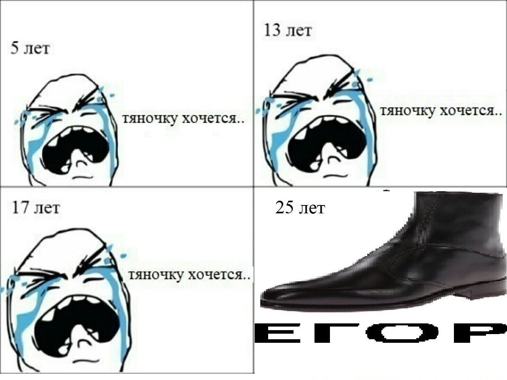
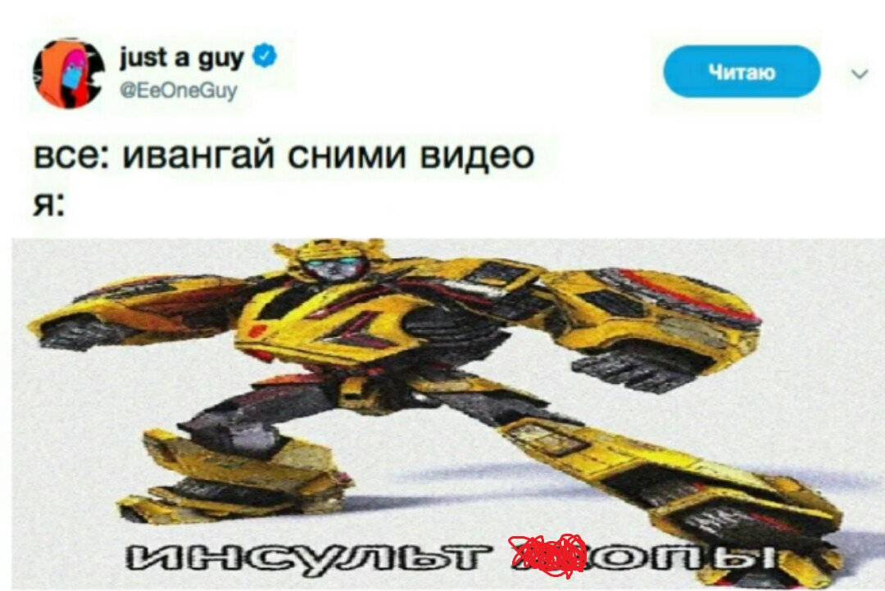
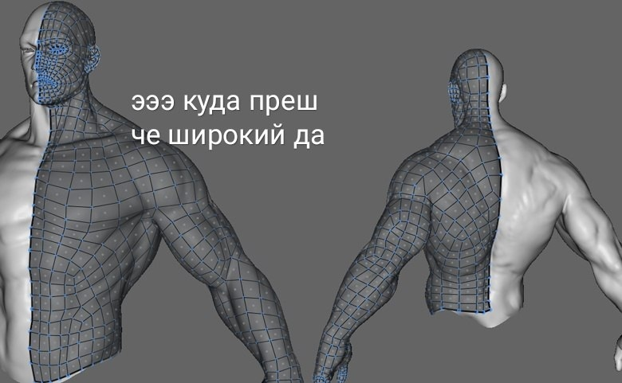
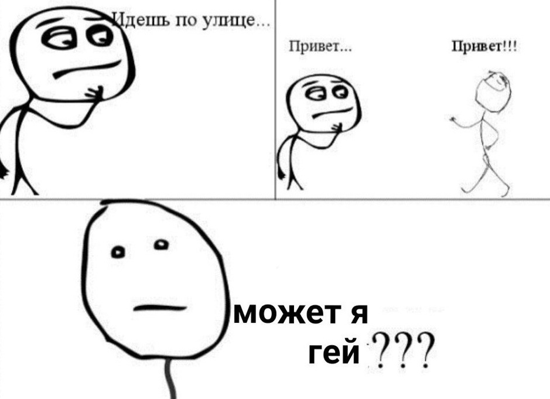

Постирония
Мы, наконец, добрались до самой сути. Аеееееее.Итак, постирония - направление постмодернизма, характеризующееся невозможностью (либо просто трудностью) отличить искренность от иронии. Эдакая высшая степень иронии. Сам постмодернизм, к слову, направление, актуальное для нашей с вами современности. Но и с этим некоторые готовы поспорить - некоторые особо упоротые оптимисты утверждают, что современное общество давно перескочило этот этап и перешло в метамодернизм, но об этом в следующей статье. 
У каждого из нас, наверняка, при встрече с чем-то похожим возникала мысль вроде: "Что это за х*%;я? Почему это г?№;о у меня в ленте? Разве это смешно?". Да, смешно. Просто вы этого пока что не поняли. Нужно ли вам тратить время на понимание постиронии? Не уверен, в мире есть много других хороших вещей - не знаю, заведите детей, там, бабушку через дорогу переведите, в конце концов. Зачем вам это понимать? А вот тут уже не знаю, дело ваше. Да и вообще, хватит вопросы тупые задавать, нашлись тут нытики.
Постмодернизм как направление в искусстве слишком обширен, поэтому тут мы коснёмся только постироничных мемчиков и, может быть, кое-чего ещё. Итак, главная характерная черта постироничных мемчиков - совершенная оторванность их от реальности, в которой мы с вами существуем. Да, эти мемы мало кто прокомментирует как "жиза". Ещё бы, темы порой всплывают такие, что нормальному человеку в голову не пришли бы даже под бутиратами (наркотики - плохо).  
Несмотря на кажущуюся на первый взгляд глупость этих мемов, каждый из них в какой-то степени искренний и идёт на диалог с человеком, который его смотрит. Мемы давно являются искусством - инструментом общения творца и аудитории. Жанр, что характерно, развивается, идёт вперёд: те проблемы, что раньше авторы ставили прямо перед носом зрителю теперь оказываются завуалированы и скрыты под метафорами и прочими тропами... Красиво, да? Как бы не так! Как и любое интернет-явление, оно не смогло укрыться от настоящей "саранчи" как рунета, так и всего интернета в целом. Эта саранча - школьники. Да, ребята, мы с вами. Ну, не мы конкретно, но наши с вами знакомые. Такие дела. 
Статья получилась несколько лирической, поэтому вот вам несколько видов: